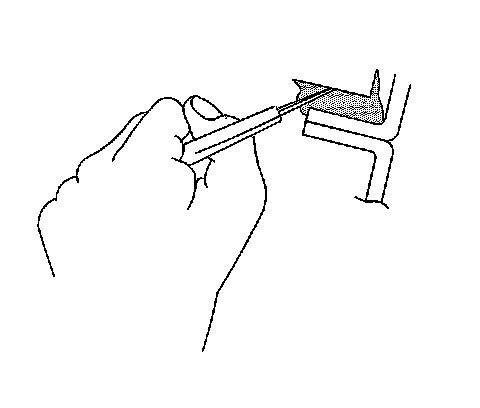

Body Waterleak Repair
Body Waterleak Repair
Caution: If any water enters the vehicle's interior up to the level of the carpet or higher and soaks the carpet, the sensing and diagnostic module (SDM) and the SDM harness connector may need to be replaced. The SDM could be activated when powered, which could cause deployment of the air bag(s) and result in personal injury. Before attempting these procedures, the SIR system must be disabled. Refer to Disabling the SIR System.
With the ignition OFF, inspect the SDM mounting area, including the carpet. If any significant soaking or evidence of significant soaking is detected, you must perform the following tasks:
1. Remove all water.
2. Repair the water damage.
3. Replace the SDM harness connector.
4. Replace the SDM.
Failure to follow these tasks could result in possible air bag deployment, personal injury, or otherwise unneeded SIR system repairs.

Depending on the location of the waterleak, you may have to remove certain interior components in order to repair the leak.
1. If the floor carpet is wet refer to Floor Carpet Drying (Service and Repair) .

2. Cut out a portion of the adhesive caulking in the leak area from inside or outside of the vehicle.
3. Clean and remove all loose particles of the adhesive old caulking from the area.
4. Apply joint body and seam sealer where the old adhesive caulking was removed.
5. Allow the adhesive caulking to dry for several hours.
6. Test for leaks.
7. Install the trim, if removed.